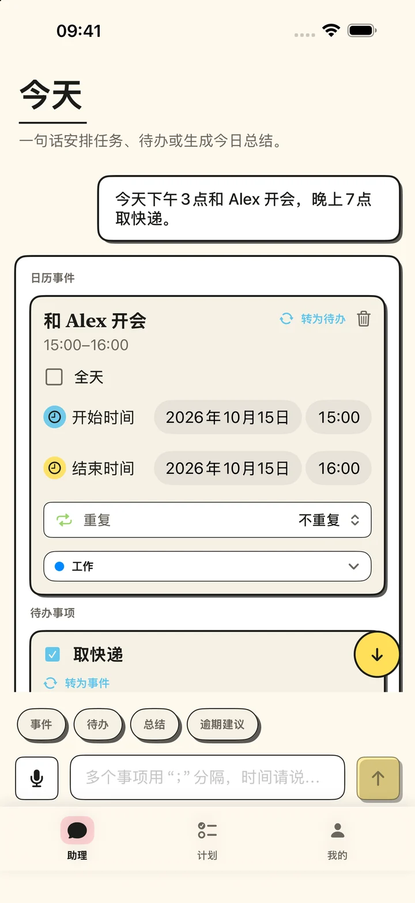
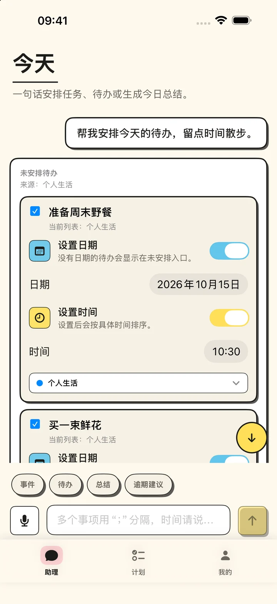
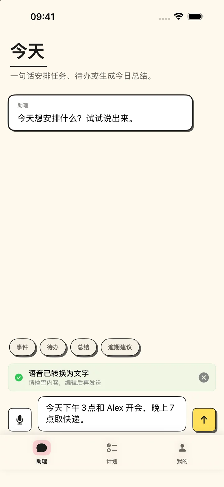
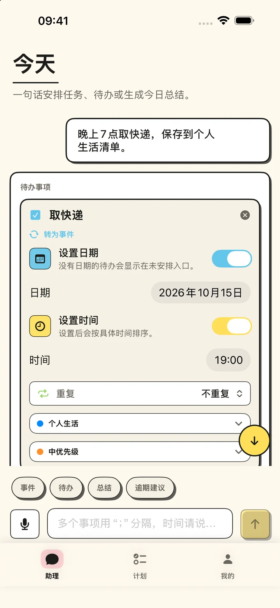
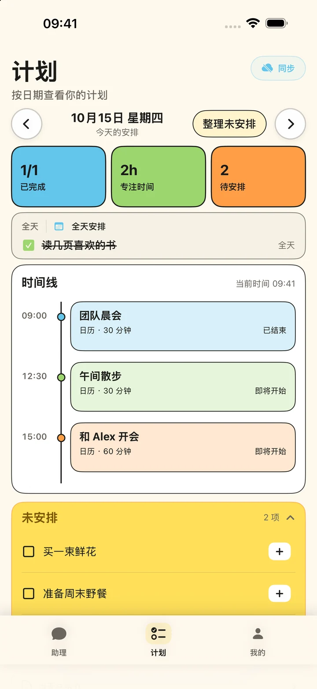
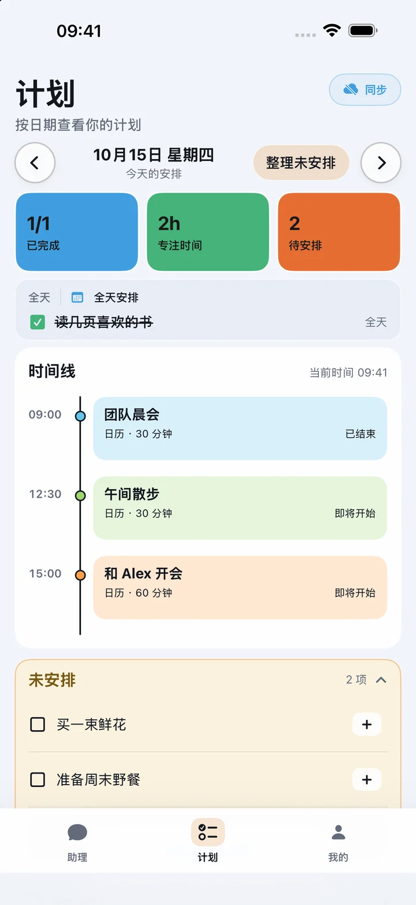
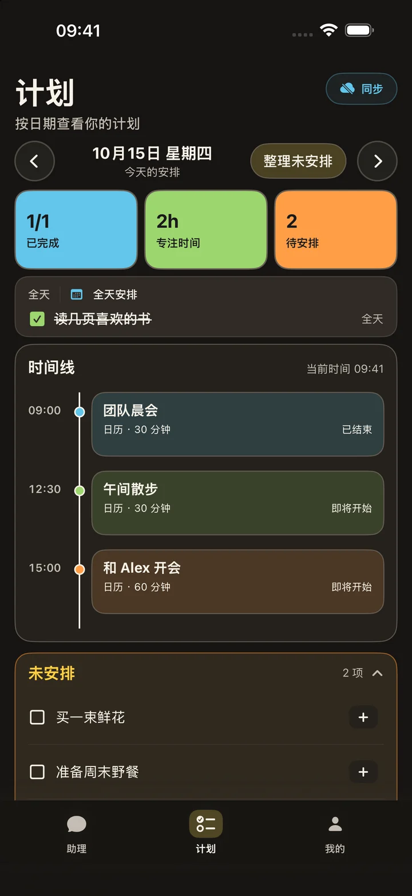
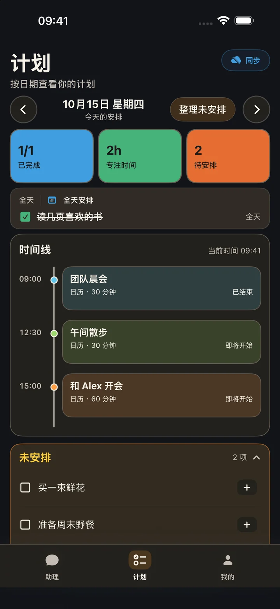

01
一天安排，一眼清楚。
在“计划”查看时间线、全天事件与未安排待办，按日期浏览日程。

用文字或语音说出安排，检查 AI 生成的事件和待办，再保存到苹果日历与提醒事项。日程、未安排任务和每日总结，一处掌握。
免费版每月 3 次 AI 解析 · 每月 1 日重置
适用于 iOS / iPadOS 17.0 及以上版本

助理里说出想法，计划里查看一天，我的里管理偏好。
在“计划”查看时间线、全天事件与未安排待办，按日期浏览日程。
让 AI 建议时间，由你检查确认。日期与时间分别设置，待办也可以暂不安排日期。

语音先转换为文字，检查或修改后再发送，让每一次安排都由你掌控。

选择事件日历和提醒事项清单，确认后保存；继续在 Smart Planner 或苹果原生 App 中管理。

以上为 App 实际界面，使用虚构的示例日程；语音画面展示转写后的检查状态。
同一份计划，换一种心情。纸质与柔光主题均支持浅色和深色外观。




先体验自然语言创建，再选择适合自己的 AI 解析额度。
AI 解析 · 每个自然月
AI 解析 · 月订阅 / 年订阅 / 终身版
更新会保留本月已用次数；已使用 3 次或以上时，剩余额度为 0。下个自然月恢复免费额度，或升级 Pro 使用无限解析。
打字或语音转文字，写下事件和待办。
检查识别结果、日期、时间和清单。
在 Smart Planner 或苹果原生 App 中继续管理。
日历和提醒事项权限仅用于你选择使用的功能。AI 请求只会发送完成当前规划或总结所需的输入及相关日程上下文。
阅读隐私政策 →